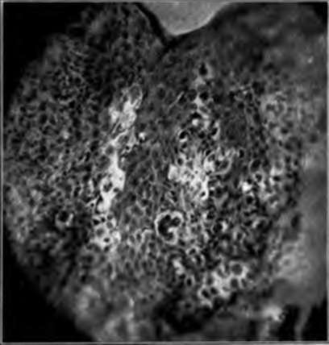

Paget's Disease
Description
This section is from the book "Skin Cancer", by Henry H. Hazen, A.B., M.D.. Also available from Amazon: Skin Cancer.
Paget's Disease
This condition was first described by Paget* in 1874, and since that time has been the subject of much study. Especially has it been debated whether the cutaneous changes antedated or followed the development of a cancerous change, and even yet this question is not absolutely settled.
Clinical Course
Paget's disease usually begins as a peculiar raw, granulating, weeping eczematous patch around the nipple of a woman past middle life. Later the breast is noted to be the seat of cancer, and there is the same fatal termination so common in other instances of this malady.
The disease is, however, subject to many variations. In some instances, from a clinical standpoint, the cutaneous lesion is, very clearly, simply an example of a chronic, weeping eczema. In other instances the cancerous change undoubtedly antedates the skin changes. Hartzell* has collected nineteen illustrations of the occurrence of Paget's disease on other portions of the body than the breast. These extramammary cases are most common upon the penis, hut, as Hartzell well shows, may develop upon almost any other portion of the body. In the discussion of Hartzell's paper it was generally agreed that it is not at all unusual to find these extramammary cases, and nearly every dermatologist of wide experience has seen one or more.
*Paget: St. Bartholemew's Hosp. Rep., 1874, v, 87. 'Hartzell: Jour. Cutan. Dis., 1910, xxviii, 379.
In the breast cases the dermatitis, may exist for as much as eight or ten years before the cancer is clinically demonstrable, and, inasmuch as cancer of the breast, when untreated, almost invariably runs a more rapid course than that, it is probable that the dermatitis is the original lesion, and is not secondary to the neoplasm, as Jacobcus* and others believe. The cancer docs not, by any manner of means, always develop directly from the diseased skin, although it not infrequently does so, but in many instances it arises at a distant point, and from the glandular epithelium and not from the cutaneous cells. In the extramammary cases the cancer develops from the skin cells, and usually in from two to three years after the dermatitis has manifested itself. It then runs the course of the more malignant prickle-celled neoplasms, not forming the typical rodent ulcers.
Fig. 53.-Histology of Pages disease. (Author's collection).
Pathology
Pathologically, the condition is extremely interesting, owing to the presence of the curious Paget's cells, about which there has been much discussion (Fig. 53). It has been thought by some that they were simply modified epithelial cells, by Jacobeus and others that they were in reality cancer cells growing up toward the skin from a deep-seated carcinoma, and by Darier,* Wickham,* and others to be parasites, the so-called psorosperms. Practically all pathologists have now conceded that the first view was correct, and that they are simply modified and degenerated prickle cells, derived from the epidermis.
*Jacobeus: Arch. f. path. Anat. (Virchow's), clxxvili.
The intrapapillary processes are much longer than usual, and are rounded rather than pointed. The cells are often widely separated, due to the presence of intracellular edema, and have lost their prickles. Some of the cells are as much as 30 microns in diameter, and usually contain a very large nucleus, lying in a vesicle. Other cells show similar, but not so marked, changes, which have been very well described by Unna.11 There is a very considerable cellular infiltration, both of the rete and the adjacent portion of the corium. These changes are true, not only of the typical breast changes, but of the cutaneous cases as well.
Should the disease be regarded as a true precancerous condition, or as a disease sui generis, as maintained by Unna? In the extra-mammary cases it is probably an example of a true precancerous dermatosis, but, inasmuch as in the breast cases the cancer may develop at a distant site, it can hardly be assumed as a pathological precancerous change, but simply as a clinical entity that definitely warns that a deep cancer may follow. As a general rule, precancerous changes are dry and hard, and not moist and weeping as in Paget's disease.
Prophylaxis And Treatment
At any rate, there is one very important lesson to be learned, a lesson that has as yet not been sufficiently emphasized. Any patient with an intractable eczema of the nipple region should invariably have a biopsy performed, and, if the sections show the changes characteristic of Paget's disease, that breast should be removed without any delay, for it will inevitably become cancerous. Whether the glands should be removed depends probably on the stage at which the operation is performed. If there is the slightest clinical evidence of cancer, a complete operation must be done, but, if clinical examination and the careful examination of the breast when it has been excised show no naked eye appearances of cancer, then the simple removal of the breast will suffice. However in all instances a microscopical examination of the removed tissue should be made.
The cutaneous cases should be treated in the same way. If they
*Darier: Soc. de Biologie, April 13, 1889.
*Wickham: Maladie de la peau dite maladie de Paget, Paris, 1890.
*Unna: Histopathology of the Diseases of the Skin.
Continue to:
Tags
bookdome.com, books, online, free, old, antique, new, read, browse, download